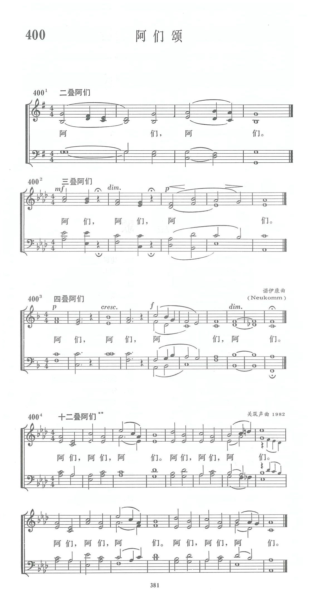

|
|
|
|
|
二叠阿门 阿门，阿门。 三叠阿门 阿门，阿门，阿门。 四叠阿门 阿门，阿门，阿门，阿门。 十二阿门 阿门，阿门，阿门，阿门，阿门，阿门，阿门，阿门，阿门，阿门，阿门，阿门，。
|
|
https://www.zanmeishige.com/tab/14073.html?songbook=1&index=400
 |
|
|
|
|

| Title: | [Fourfold Amen] Neukomm |
| Composer: | Sigismund Neukomm |
| Incipit: | 32435 42171 11 |
| Key: | F Major |
| Copyright: | Public Domain |
第400首 阿们颂 AMENS _C.V．Neukomm
经文：“以斯拉称颂耶和华至大的上帝；众民都举手应声说：‘阿们!阿们!’就低头，面伏于地，敬拜耶和华”(尼8：6)。
为了增加礼拜堂终礼时的崇拜气氛，在有唱诗班的教会内，常在牧师祝福以后，由唱诗班唱或带领会众同唱“阿们”。唱一次“阿们”似觉意犹未尽，因此有叠句阿们的产生，由谱曲者创作出不同的叠句，这也符合圣经的记载(尼8：6)。
按“阿们”一词乃希伯来语，意为“真理”，“实实在在”。犹太教早就用它作为礼拜时会众回应的话语。基督教也采用它作为应和他人的祈祷，或赞同他人所讲的道理来表示“同意”、“诚心所愿”。主后约148年，有位殉道者查斯丁在他为基督教辩护的书籍内曾记载说：“基督徒在圣餐礼拜祝圣祷文之后同唱阿们。”可见其历史的悠久。
教会历史中遗留下来的《阿们颂》的曲调很多，《新编》只选有二叠、四叠、十二叠各式。
这里所选用四叠阿们的作曲者诺伊康(C.V．Neukomm，1778一1858)生于德国撒尔斯堡，曾作过圣彼得大教堂的唱诗班指挥，也跟过乐圣海顿的弟弟学过音乐。1806一1809年在圣彼得堡德国剧院中任指挥，后移居巴黎，到过世界各地演奏钢琴，还和门德尔松一起访问过英国，写过一些神曲和宗教音乐。
十二叠阿们曲则是一首中国的创作。作者关筑声，1911年生。1O多岁时信主，受过音乐专业训练，作曲时已是一位退休的音乐教师。他是北京教会的信徒。1982年北京有位牧师向他表示，希望能有一首较长的多叠阿们颂，以供会众和唱诗班唱颂。他接受这个建议，谱下了此曲。据作者自称是摹仿教堂钟声而写的。
https://en.wikipedia.org/wiki/Sigismund_von_Neukomm
Sigismund von Neukomm
{kind=link}
Sigismond Neukomm or Sigismund Ritter von Neukomm [after ennoblement as a knight] (10 July 1778, in Salzburg – 3 April 1858, in Paris) was an Austrian composer and pianist.
Neukomm first studied with the organist Weissauer and later studied theory under Michael Haydn and Leopold Mozart, though his studies at Salzburg University were in philosophy and mathematics. He became honorary organist at the Salzburg University church in 1792, and was appointed chorus-master at the Salzburg court theater in 1796. Neukomm was kapellmeister at St. Petersburg's German theatre from 1804 to 1809, and in the 1810s he spent time in Brazil, South America, where he popularized the works of Joseph Haydn and Wolfgang Mozart. He worked at D. João VI's court in Rio de Janeiro. His works had some currency in the nineteenth century: Johann Nepomuk Hummel's op. 123 is a Fantasie for Piano on themes by Hummel and von Neukomm. Boston's Handel and Haydn Society, for example, gave 55 performances of his oratorio David during the 1830s.[1]
Neukomm's compositional output is large. With the older composer's approval he made arrangements of Haydn's works, including the oratorios The Seasons and The Creation. He wrote a clarinet quintet, several organ voluntaries, ten operas, incidental music for four plays, forty-eight masses, eight oratorios, and a large body of smaller works including vocal pieces, works for piano solo, and about 200 songs.
In 1814 Neukomm was responsible for erecting a tombstone to the memory of Haydn over his first grave in the Hundsturm cemetery in Vienna. The inscription included a puzzle canon composed by Neukomm himself. He had previously been one of Haydn's pupils, and was also in regular contact with the composer in the last months of his life.
The following year, his Requiem Mass à la mémoire de Louis XVI commissioned by Tayllerand, premiered for royalty and diplomats attending the Congress of Vienna on 21 January, the 22nd anniversary of the execution of Louis XVI in 1793.